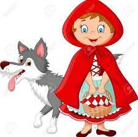

es para la etiqueta span! y es para mostrar

Había una vez una niña muy linda que vivía en el bosque con su mama, que le había hecho una capa roja para protegerse del frio y el viento. A la niña le gustaba tanto la capuchita que la llevaba a todas horas, por lo que que todo el mundo la llamaba Caperucita Roja.
Un día, su abuelita que vivía al otro lado del bosque se puso malita y su madre le pidió que le llevase unos pasteles, frutas y miel.
- Querida hijita, llévale estos alimentos a la abuelita y sobre todo no te apartes del camino, ya que en el bosque hay lobos y es muy peligroso - le dijo
Caperucita Roja recogió la cesta con los pasteles. la fruta y la miel y se puso en camino.
Caperucita tenía que atravesar el bosque para llegar a casa de la abuelita, pero no le daba miedo porque allí siempre se encontraba con muchos amigos: los pájaros, las ardillas...
De repente se encontró al lobo delante de ella, que era muy muy grande y con su voz ronca y temible le preguntó a Caperucita.
- Caperucita Caperucita ¿ a donde vas tu tan bonita ?
- A casa de mi abuelita- le respondío Caperucita.
- Te reto a una carrera- le dijo el lobo - a ver quien llega antes a casa de tu abuelita. Te daré ventaja, yo iré por el camino más largo, tu puedes tomar este atajo.
- De acuerdo - dijo Caperucita - sin saber que el atajo era en realidad un camino más largo
Caperucita se puso en camino atravesando el bosque , no haciendo caso a su mama y en un momento dado del camino se entretuvo cogiendo flores.
-La abuela se pondrá muy contenta cuando le lleve un hermoso ramo de flores además de lo que hay en la cesta.- pensó Caperucita
Mientras tanto, el lobo se fue muy rápido y sin perder el tiempo a casa de la abuelita, llamó a la puerta y la anciana le abrió pensando que era Caperucita.
El lobo feroz devoró a la abuelita y se puso en la cama y se vistió el camisón y el gorro rosa de la abuela.

Caperucita llegó contenta a la casa y al ver la puerta abierta entro y se acercó a la cama y vio sorprendida que su abuela estaba cambiada.
- Abuelita, abuelita, ¡qué ojos más grandes tienes!
- Son para verte mejor- dijo el lobo imitando la voz de la abuela.
- Abuelita, abuelita, ¡qué orejas más grandes tienes!
- Son para oírte mejor- siguió diciendo el lobo.
- Abuelita, abuelita, ¡qué dientes más grandes tienes!
- Son para...¡comerte mejoooor!- grito el lobo abalanzándose sobre Caperucita roja.
Caperucita comenzó a correr por la habitación gritando desesperada. Mientras tanto, un cazador que en ese momento pasaba por allí, escuchó los gritos de Caperucita y fue corriendo en su ayuda. Entró en la casa y vio al lobo intentando devorarla.
El cazador le dió un golpe fuerte en la cabeza al lobo y cayó al suelo desmayado, sacó su cuchillo rajó su vientre y saco a la abuelita que aún estaba viva.
Para castigar al lobo malvado, el cazador le llenó el vientre de piedras y luego lo volvió a cerrar. Cuando el lobo despertó de su pesado sueño, sintió muchísima sed y se dirigió a un estanque próximo para beber. Como las piedras pesaban mucho, cayó en el estanque de cabeza y se ahogó.
Caperucita y su abuela, no sufrieron más que un gran susto y Caperucita roja había aprendido la lección. Prometió a su abuelita no apartarse núnca del camino como le había dicho su mama y no hablar con ningún desconocido que se encontrara en el camino.